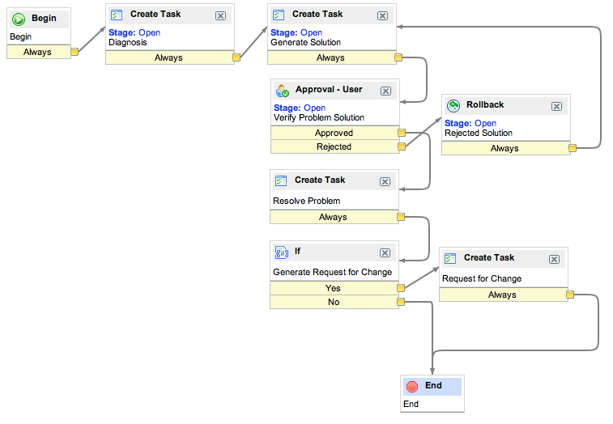

Defining a Problem Management Workflow
| |
Note: This article applies to Fuji. For more current information, see Define a Problem Management Workflow at http://docs.servicenow.com
The ServiceNow Wiki is no longer being updated. Please refer to http://docs.servicenow.com for the latest product documentation. |
1 Overview
The Graphical Workflow Editor allows administrators to automate common processes. This allows standard Problem Management processes to be defined and automated.
The example workflow below is a workflow for Database problems. If the problem involves a configuration item of class Database, this workflow will run, guiding the problem management team through diagnosis and solution, and asks the Problem Manager to verify the solution. It also generates a Request for Change if such a request is required.
If using a Problem Management workflow, add the Related List Tasks > Parent to the Problem form in order to see the tasks generated by the workflow.
2 Defining a Problem Management Workflow
- Navigate to Workflow > Workflow Editor and click New.
- Populate the form as follows:
- Name - Database Problem Workflow
- Table - Problem [problem]
- If condition matches - Run the Workflow.
- Run after bus. rules run - True. This field needs to be checked before any workflow that uses approvals, or the business rules will conflict with the workflow and fail to run properly. If this field does not appear on the Workflow Properties form, it will need to be added.
- Expected Time - Days 7 Hours 00:00:00.
- Stage Field - Problem State. As the workflow passes from activity to activity, activites can update the stage field accordingly, so that the requestor can see how far along in the workflow the Problem Management Team is.
- Condition - Dot-walk to Configuration item.Class is Database.
- Drag the activity Create Task onto the arrow between Begin and End. This activity will generate a task to diagnose the problem. Populate the form that appears as such:
- Name - Diagnosis
- Stage - Open
- Fulfillment Group - Database
- Drag the activity Create Task onto the arrow between the previous task and End. This activity will generate a task to generate a solution to the problem. Populate the form that appears as such:
- Name - Generate Solution
- Stage - Open
- Fulfillment Group - Database
- Drag the activity Approval - User onto the the arrow between the previous task and End. This will ask the manager of the assignment group to verify the solution to the problem. Populate the form that appears as such:
- Name - Verify Problem Solution
- Stage - Open
- User - Dot-walk to ${assignment_group.manager}
- Drag the activity Rollback' into the workflow area, and drag the arrow from the Rejected tab under Approval - User to the Rollback activity. Then drag the arrow from the Rollback to the Create Task for generating a solution. This will force the database team to repeat the Generate Solution task if the Problem Manager rejects the proposed solution. Populate the form as follows:
- Name - Rejected Solution
- Stage - Open
- Comment Field - Work Notes. This means that whatever is put in the Comment field will be added to the Work Notes field of the original Problem ticket.
- Drag the activity Create Task onto the arrow between Verify Problem Solution and End. This activity will generate a task to resolve the problem. Populate the form that appears as such:
- Name - Resolve Problem
- Fulfillment Group - Database
- Drag the activity If onto the arrow between the previous task and End. This activity will check whether the Problem Management team set the Problem State field to Pending Change without generating a Request for Change. Populate the form as follows:
- Name - Generate Request for Change
- Conditions - Problem state is Pending Change AND Change request is empty.
- Drag the activity Create Task onto the arrow between the previous activity and End. This activity will generate a Request for Change if the previous activity's conditions are met. Populate the form as follows:
- Name - Request for Change
- Task Type - Change Request [change_request]
- Short Description - Solution for Problem
- Publish the workflow in the Workflow Actions menu.
- The resulting workflow should be as follows:
- 
{kind=link}
{kind=link}
{kind=link}
{kind=link}
{kind=link}
{kind=link}
{kind=link}
{kind=link}
Contents > Administer > Workflow > Workflow Examples
Contents > Deliver > IT Services > Problem Management